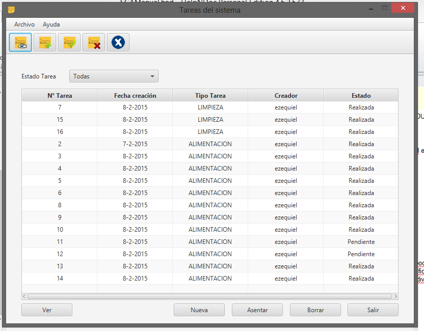

Si la tarea no se encuentra en la lista desplegada al ingresar a la sección de TAREAS, deberá planificarla para luego poder asentarla:

Seleccionando Nueva medición, podrá planificar una medición como se explica aquí.
Seleccionando Nueva actividad, podrá planificar una actividad como se explica aquí.
Luego, dichas tareas aparecerán en la lista, y podrá asentarlas como se explica en ésta sección para actividades y en ésta sección para mediciones.
Created with the Personal Edition of HelpNDoc: Easily create PDF Help documents